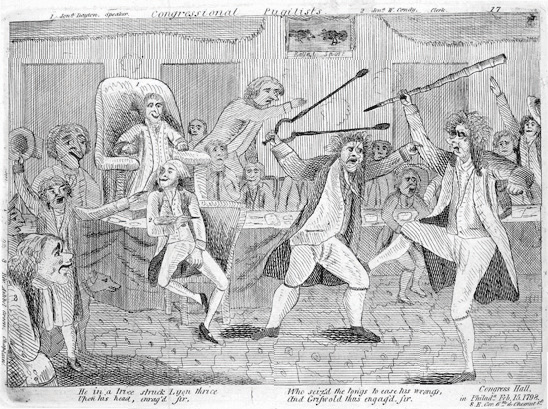
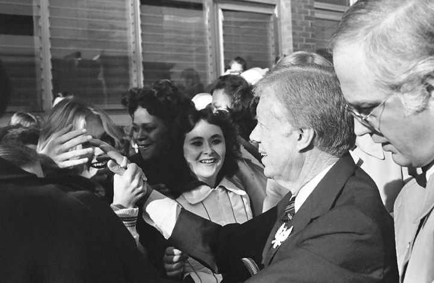
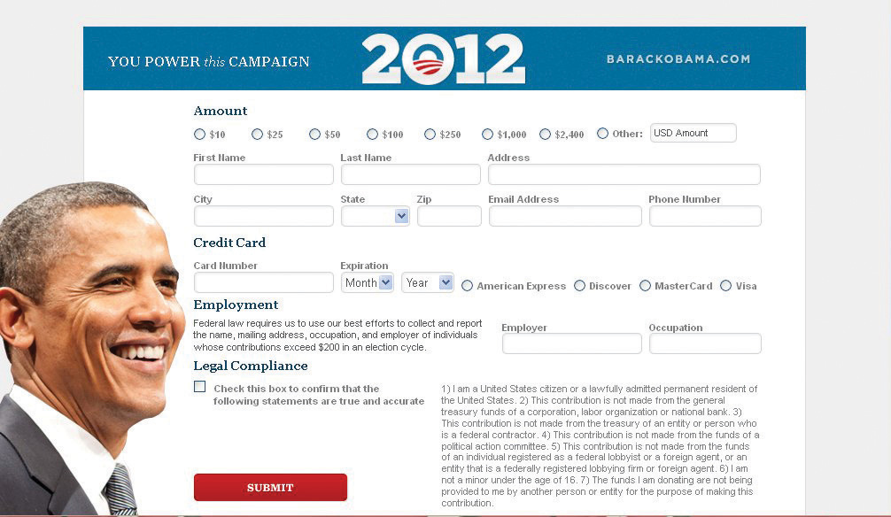
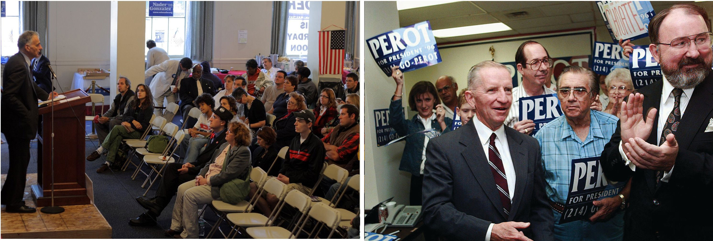
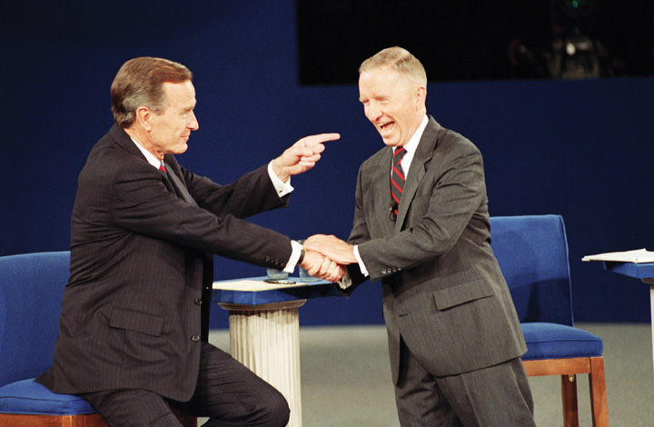
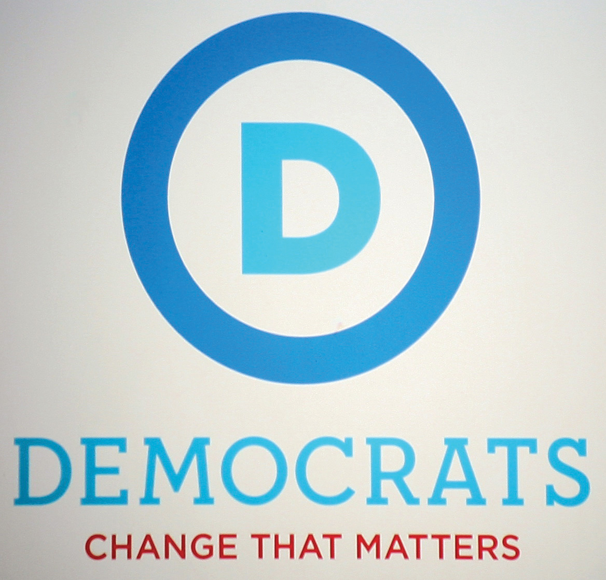
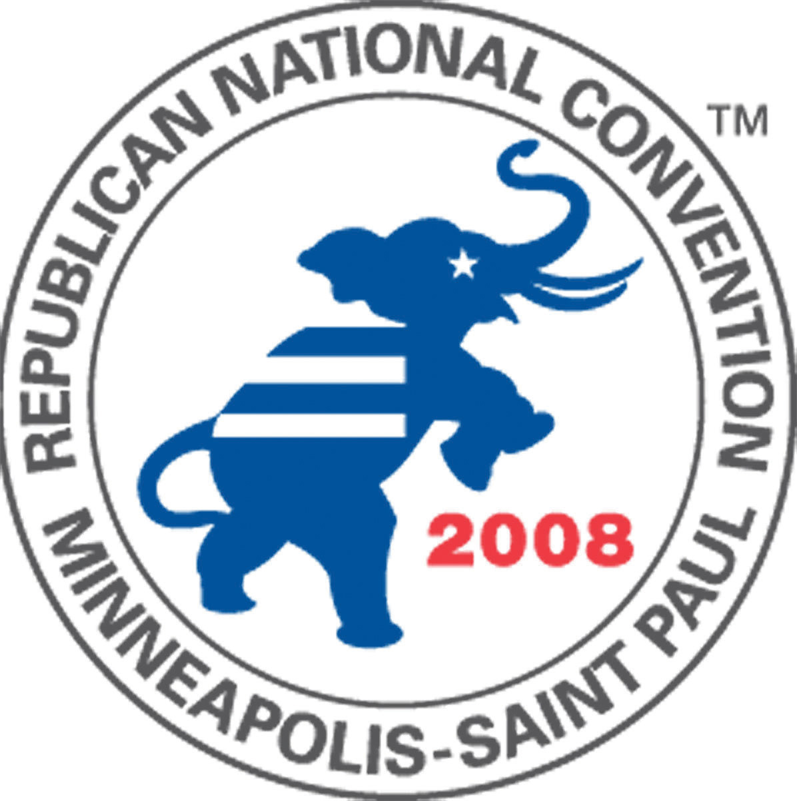

A favorite pastime of political journalists is periodically assessing the state of political parties, usually in conjunction with national elections. Journalists are rarely optimistic or complimentary when describing parties’ present status or forecasting their future. However, history has shown that the Democratic and Republican parties are amazingly enduring institutions, even when the mass media have sold them short.
Reporters routinely take stock of the parties, and their prognosis is typically bleak and filled with foreboding. In 2003, New York Times political reporter Adam Clymer took stock of the Democratic and Republican parties in a series of front-page articles. “With the Congress thinly divided along partisan lines, another presidential election taking shape, and the rules of campaign finance in limbo, the two national political parties are at crucial turning points,” he wrote. Clymer described a revitalized Republican Party that was looking forward to an era of political dominance after having had “one foot in the grave” for more than twenty years since the Watergate scandal in 1974. His prognosis for the Democratic Party was more pessimistic. Clymer quoted a Democratic Party leader as saying, “God knows we need help” and another who observed that his party had “run out of gas.”Adam Clymer, “Buoyed by Resurgence, G.O.P. Strives for an Era of Dominance,” New York Times, May 25, 2003, accessed March 23, 2011, http://query.nytimes.com/gst/fullpage.html?res=950CE1D91531F936A15756C0A9659C8B63&pagewanted=all. He argued that the Democrats lacked a unified message or a clear leader, and quoted a party activist: “Our party has so many disparate points of influence that we can never focus enough to achieve our programs.”Adam Clymer, “Democrats Seek a Stronger Focus, and Money” New York Times, May 26, 2003, accessed March 23, 2011, http://www.nytimes.com/2003/05/26/us/democrats-seek-a-stronger-focus-and-money.html.
In hindsight, Clymer’s predictions are not entirely accurate, especially after the victory of Democratic president Barack Obama in 2008, and illustrate the pitfalls of speculating about the future of political parties. However, his observations raise important ideas about American parties. Political parties are enduring and adaptive institutions whose organization and functions change in response to different political and historical circumstances.Leon D. Epstein, Political Parties in the American Mold (Madison: University of Wisconsin Press, 1986). The two major American political parties, the Republicans and the Democrats, each have gone through periods of popularity, decline, and resurgence.
Michelle Obama addresses delegates. Political parties are important mechanisms for citizen involvement at the grassroots level.
Source: Photo courtesy of QQQQQQhttp://commons.wikimedia.org/wiki/File:Michelle_Obama_DNC_2008.jpg.
The Democratic and Republican parties have dominated for over 150 years because of their ability to adapt to changing political and cultural circumstances. In the early decades of the republic, when voting rights were limited to male landowners, parties formed around charismatic leaders such as Thomas Jefferson and John Adams. When voting rights were extended, parties changed to accommodate the public. As immigrants came to the United States and settled in urban areas, party machines emerged and socialized the immigrants to politics.
Parties also have adapted to changes in the media environment. When radio and television were new technologies, parties incorporated them into their strategies for reaching voters, including through advertising. More recently, the Republican and Democratic parties have advanced their use of the Internet and digital media for campaigning, fundraising, and issue advocacy.
After reading this section, you should be able to answer the following questions:
Political partiesAn enduring organization under whose label candidates seek and hold office. are enduring organizations under whose labels candidates seek and hold elective offices.Leon D. Epstein, Political Parties in the American Mold (Madison: University of Wisconsin Press, 1986), 3. Parties develop and implement rules governing elections. They help organize government leadership.V. O. Key Jr., Politics, Parties, & Pressure Groups, 5th ed. (New York: Thomas Y. Crowell Company, 1964). Political parties have been likened to public utilities, such as water and power companies, because they provide vital services for a democracy.
The endurance and adaptability of American political parties is best understood by examining their colorful historical development. Parties evolved from factions in the eighteenth century to political machines in the nineteenth century. In the twentieth century, parties underwent waves of reform that some argue initiated a period of decline. The renewed parties of today are service-oriented organizations dispensing assistance and resources to candidates and politicians.John H. Aldrich, Why Parties? The Origin and Transformation of Party Politics in America (Chicago: University of Chicago Press, 1995); Samuel J. Eldersveld and Hanes Walton Jr., Political Parties in American Society, 2nd ed. (Boston: Bedford/St. Martin’s, 2000).
The Development of Political Parties
A timeline of the development of political parties can be accessed at http://www.edgate.com/elections/inactive/the_parties.
The founders of the Constitution were fearful of the rise of factions, groups in society that organize to advance a political agenda. They designed a government of checks and balances that would prevent any one group from becoming too influential. James Madison famously warned in Federalist No. 10James Madison’s essay in the Federalist Papers that deals with the need to guard against the danger of factions whose interests might be at odds with those of the wider community. of the “mischiefs of faction,” particularly a large majority that could seize control of government.Publius (James Madison), “The Federalist No. 10,” in The Federalist, ed. Robert Scigliano (New York: The Modern Library Classics, 2001), 53–61. The suspicion of parties persisted among political leaders for more than a half century after the founding. President James Monroe opined in 1822, “Surely our government may go on and prosper without the existence of parties. I have always considered their existence as the curse of the country.”Richard Hofstadter, The Idea of a Party System (Berkeley: University of California Press, 1969), 200.
Figure 10.1
Newspaper cartoons depicted conflicts that arose between the Federalists and Republicans, who sought to control government.
Despite the ambiguous feelings expressed by the founders, the first modern political party, the Federalists, appeared in the United States in 1789, more than three decades before parties developed in Great Britain and other western nations.William Nisbet Chambers and Walter Dean Burnham, The American Party Systems (New York, Oxford University Press, 1975). Since 1798, the United States has only experienced one brief period without national parties, from 1816 to 1827, when infighting following the War of 1812 tore apart the Federalists and the Republicans.William Nisbet Chambers, Political Parties in a New Nation (New York: Oxford University Press, 1963).
The first American party system had its origins in the period following the Revolutionary War. Despite Madison’s warning in Federalist No. 10, the first parties began as political factions. Upon taking office in 1789, President George Washington sought to create an “enlightened administration” devoid of political parties.John Kenneth White and Daniel M. Shea, New Party Politics (Boston: Bedford/St. Martin’s, 2000). He appointed two political adversaries to his cabinet, Alexander Hamilton as treasury secretary and Thomas Jefferson as secretary of state, hoping that the two great minds could work together in the national interest. Washington’s vision of a government without parties, however, was short-lived.
Hamilton and Jefferson differed radically in their approaches to rectifying the economic crisis that threatened the new nation.Joseph Charles, The Origins of the American Party System (New York: Harper & Row, 1956). Hamilton proposed a series of measures, including a controversial tax on whiskey and the establishment of a national bank. He aimed to have the federal government assume the entire burden of the debts incurred by the states during the Revolutionary War. Jefferson, a Virginian who sided with local farmers, fought this proposition. He believed that moneyed business interests in the New England states stood to benefit from Hamilton’s plan. Hamilton assembled a group of powerful supporters to promote his plan, a group that eventually became the Federalist Party.Richard Hofstadter, The Idea of a Party System (Berkeley: University of California Press, 1969).
The Federalist Party originated at the national level but soon extended to the states, counties, and towns. Hamilton used business and military connections to build the party at the grassroots level, primarily in the Northeast. Because voting rights had been expanded during the Revolutionary War, the Federalists sought to attract voters to their party. They used their newfound organization for propagandizing and campaigning for candidates. They established several big-city newspapers to promote their cause, including the Gazette of the United States, the Columbian Centinel, and the American Minerva, which were supplemented by broadsheets in smaller locales. This partisan press initiated one of the key functions of political parties—articulating positions on issues and influencing public opinion.See William Nisbet Chambers, Political Parties in a New Nation (New York: Oxford University Press, 1963).
Figure 10.2 The Whiskey Rebellion

Farmers protested against a tax on whiskey imposed by the federal government. President George Washington established the power of the federal government to suppress rebellions by sending the militia to stop the uprising in western Pennsylvania. Washington himself led the troops to establish his presidential authority.
Disillusioned with Washington’s administration, especially its foreign policy, Jefferson left the cabinet in 1794. Jefferson urged his friend James Madison to take on Hamilton in the press, stating, “For God’s sake, my Dear Sir, take up your pen, select your most striking heresies, and cut him to pieces in the face of the public.”William Nisbet Chambers, Political Parties in a New Nation (New York: Oxford University Press, 1963), 58. Madison did just that under the pen name of Helvidius. His writings helped fuel an anti-Federalist opposition movement, which provided the foundation for the Republican Party. This early Republican Party differs from the present-day party of the same name. Opposition newspapers, the National Gazette and the Aurora, communicated the Republicans’ views and actions, and inspired local groups and leaders to align themselves with the emerging party.See William Nisbet Chambers, Political Parties in a New Nation (New York: Oxford University Press, 1963). The Whiskey RebellionIn 1794, farmers on the western frontier protested against a tax on whiskey that was part of Treasury Secretary Alexander Hamilton’s plan to eliminate the national debt; the rebellion was suppressed by an army dispatched by the newly formed national government. in 1794, staged by farmers angered by Hamilton’s tax on whiskey, reignited the founders’ fears that violent factions could overthrow the government.Michael Schudson, The Good Citizen (New York: Free Press, 1998).
Political parties were first evident in presidential elections in 1796, when Federalist John Adams was barely victorious over Republican Thomas Jefferson. During the election of 1800, Republican and Federalist members of Congress met formally to nominate presidential candidates, a practice that was a precursor to the nominating conventions used today. As the head of state and leader of the Republicans, Jefferson established the American tradition of political parties as grassroots organizations that band together smaller groups representing various interests, run slates of candidates for office, and present issue platforms.John Kenneth White and Daniel M. Shea, New Party Politics (Boston: Bedford/St. Martin’s, 2000).
The early Federalist and Republican parties consisted largely of political officeholders. The Federalists not only lacked a mass membership base but also were unable to expand their reach beyond the monied classes. As a result, the Federalists ceased to be a force after the 1816 presidential election, when they received few votes. The Republican Party, bolstered by successful presidential candidates Thomas Jefferson, James Madison, and James Monroe, was the sole surviving national party by 1820. Infighting soon caused the Republicans to cleave into warring factions: the National Republicans and the Democratic-Republicans.Ronald P. Formisano, “Federalists and Republicans: Parties, Yes—System, No,” in The Evolution of the American Electoral Systems, ed. Paul Kleppner, Walter Dean Burnham, Ronald P. Formisano, Samuel P. Hays, Richard Jensen, and William G. Shade (Westport, CT: Greenwood Press, 1981), 37–76.
A true political party system with two durable institutions associated with specific ideological positions and plans for running the government did not begin to develop until 1828. The Democratic-Republicans, which became the Democratic Party, elected their presidential candidate, Andrew Jackson. The Whig Party, an offshoot of the National Republicans, formed in opposition to the Democrats in 1834.Michael F. Holt, The Rise and Fall of the American Whig Party (New York: Oxford University Press, 2003).
The era of Jacksonian DemocracyA period lasting from the election of President Andrew Jackson in 1828 until the outbreak of the Civil War, which featured the rise of mass-based party politics., which lasted until the outbreak of the Civil War, featured the rise of mass-based party politics. Both parties initiated the practice of grassroots campaigning, including door-to-door canvassing of voters and party-sponsored picnics and rallies. Citizens voted in record numbers, with turnouts as high as 96 percent in some states.Michael F. Holt, The Rise and Fall of the American Whig Party (New York: Oxford University Press, 2003). Campaign buttons publically displaying partisan affiliation came into vogue. The spoils systemAlso known as patronage, a system in which voters were rewarded for their party loyalty and votes with jobs and favors dispensed by party leaders., also known as patronage, where voters’ party loyalty was rewarded with jobs and favors dispensed by party elites, originated during this era.
The two-party system consisting of the Democrats and Republicans was in place by 1860. The Whig Party had disintegrated as a result of internal conflicts over patronage and disputes over the issue of slavery. The Democratic Party, while divided over slavery, remained basically intact.Michael F. Holt, The Rise and Fall of the American Whig Party (New York: Oxford University Press, 2003). The Republican Party was formed in 1854 during a gathering of former Whigs, disillusioned Democrats, and members of the Free-Soil Party, a minor antislavery party. The Republicans came to prominence with the election of Abraham Lincoln.
Figure 10.3 Thomas Nast Cartoon of the Republican Elephant

The donkey and the elephant have been symbols of the two major parties since cartoonist Thomas Nast popularized these images in the 1860s.
Source: Photo courtesy of Harper’s Weekly, http://commons.wikimedia.org/wiki/File:NastRepublicanElephant.jpg.
Parties were especially powerful in the post–Civil War period through the Great Depression, when more than 15 million people immigrated to the United States from Europe, many of whom resided in urban areas. Party machinesPartisan command structures headed by bosses who exacted loyalty and services from underlings in return for jobs and favors; machines were found primarily in cities., cohesive, authoritarian command structures headed by bosses who exacted loyalty and services from underlings in return for jobs and favors, dominated political life in cities. Machines helped immigrants obtain jobs, learn the laws of the land, gain citizenship, and take part in politics.
Machine politics was not based on ideology, but on loyalty and group identity. The Curley machine in Boston was made up largely of Irish constituents who sought to elect their own.John Kenneth White and Daniel M. Shea, New Party Politics (Boston: Bedford/St. Martin’s, 2000). Machines also brought different groups together. The tradition of parties as ideologically ambiguous umbrella organizations stems from Chicago-style machines that were run by the Daley family. The Chicago machine was described as a “hydra-headed monster” that “encompasses elements of every major political, economic, racial, ethnic, governmental, and paramilitary power group in the city.”Milton Rakove, Don’t Make No Waves, Don’t Back No Losers: An Insider’s Analysis of the Daley Machine (Bloomington: Indiana University Press, 1975), 3. The idea of a “balanced ticket” consisting of representatives of different groups developed during the machine-politics era.Gerald M. Pomper, Passions and Interests (Lawrence: University Press of Kansas, 1992).
Because party machines controlled the government, they were able to sponsor public works programs, such as roads, sewers, and construction projects, as well as social welfare initiatives, which endeared them to their followers. The ability of party bosses to organize voters made them a force to be reckoned with, even as their tactics were questionable and corruption was rampant.A. James Riechley, The Life of the Parties (New York: Free Press, 1992). Bosses such as William Tweed in New York were larger-than-life figures who used their powerful positions for personal gain. Tammany Hall boss George Washington Plunkitt describes what he called “honest graft”:
My party’s in power in the city, and its goin’ to undertake a lot of public improvements. Well, I’m tipped off, say, that they’re going to lay out a new park at a certain place. I see my opportunity and I take it. I go to that place and I buy up all the land I can in the neighborhood. Then the board of this or that makes the plan public, and there is a rush to get my land, which nobody cared particular for before. Ain’t it perfectly honest to charge a good price and make a profit on my investment and foresight? Of course, it is. Well, that’s honest graft.William L. Riordon, Plunkitt of Tammany Hall (St. James, NY: Brandywine Press, 1994), 3.
Boss Tweed Meets His Match
The lasting image of the political party boss as a corrupt and greedy fat cat was the product of a relentless campaign by American political cartoonist Thomas Nast in Harper’s Weekly from 1868 to 1871. Nast’s target was William “Boss” Tweed, leader of the New York Tammany Hall party machine, who controlled the local Democratic Party for nearly a decade.
Nast established the political cartoon as a powerful force in shaping public opinion and the press as a mechanism for “throwing the rascals” out of government. His cartoons ingrained themselves in American memories because they were among the rare printed images available to a wide audience in a period when photographs had not yet appeared in newspapers or magazines, and when literacy rates were much lower than today. Nast’s skill at capturing political messages in pictures presented a legacy not just for today’s cartoonists but for photographers and television journalists. His skill also led to the undoing of Boss Tweed.
Tweed and his gang of New York City politicians gained control of the local Democratic Party by utilizing the Society of Tammany (Tammany Hall), a fraternal organization, as a base. Through an extensive system of patronage whereby the city’s growing Irish immigrant population was assured employment in return for votes, the Tweed Ring was able to influence the outcome of elections and profit personally from contracts with the city. Tweed controlled all New York state and city Democratic Party nominations from 1860 to 1870. He used illegal means to force the election of a governor, a mayor, and the speaker of the assembly.
The New York Times, Harper’s Weekly, reform groups, and disgruntled Democrats campaigned vigorously against Tweed and his cronies in editorials and opinion pieces, but none was as successful as Nast’s cartoons in conveying the corrupt and greedy nature of the regime. Tweed reacted to Nast’s cartoon, “Who Stole the People’s Money,” by demanding of his supporters, “Stop them damned pictures. I don’t care what the papers write about me. My constituents can’t read. But, damn it, they can see pictures.”Jonathan Kandall, “Boss,” Smithsonian Magazine, February 2002, accessed March 23, 2011, http://www.smithsonianmag.com/people-places/boss.html.

“Who Stole the People’s Money.” Thomas Nast’s cartoon, “Who Stole the People’s Money,” implicating the Tweed Ring appeared in Harper’s Weekly on August 19, 1871.
Source: Photo courtesy of Harper’s Weekly, http://www.harpweek.com/09cartoon/BrowseByDateCartoon-Large.asp?Month=August&Date=19.
The Tweed Ring was voted out in 1871, and Tweed was ultimately jailed for corruption. He escaped and was arrested in Spain by a customs official who didn’t read English, but who recognized him from the Harper’s Weekly political cartoons. He died in jail in New York.
Not everyone benefited from political machines. There were some problems that machines either could not or would not deal with. Industrialization and the rise of corporate giants created great disparities in wealth. Dangerous working conditions existed in urban factories and rural coal mines. Farmers faced falling prices for their products. Reformers blamed these conditions on party corruption and inefficiency. They alleged that party bosses were diverting funds that should be used to improve social conditions into their own pockets and keeping their incompetent friends in positions of power.
The mugwumps, reformers who declared their independence from political parties, banded together in the 1880s and provided the foundation for the Progressive MovementReformers who came together in the 1880s to fight party corruption and inefficiency that they felt was the legacy of party machines.. The Progressives initiated reforms that lessened the parties’ hold over the electoral system. Voters had been required to cast color-coded ballots provided by the parties, which meant that their vote choice was not confidential. The Progressives succeeded by 1896 in having most states implement the secret ballot. The secret ballot is issued by the state and lists all parties and candidates. This system allows people to split their ticket when voting rather than requiring them to vote the party line. The Progressives also hoped to lessen machines’ control over the candidate selection process. They advocated a system of direct primary electionsAn election that decides who will be a political party’s nominee for an office in the general election. in which the public could participate rather than caucusesMeetings held by party members to select candidates who will run for office., or meetings of party elites. The direct primary had been instituted in only a small number of states, such as Wisconsin, by the early years of the twentieth century. The widespread use of direct primaries to select presidential candidates did not occur until the 1970s.
The Progressives sought to end party machine dominance by eliminating the patronage system. Instead, employment would be awarded on the basis of qualifications rather than party loyalty. The merit system, now called the civil serviceGovernment employment that would be awarded on the basis of qualifications rather than party loyalty., was instituted in 1883 with the passage of the Pendleton Act. The merit system wounded political machines, although it did not eliminate them.Charles Merriam and Harold F. Gosnell, The American Party System (New York: MacMillan, 1922).
Progressive reformers ran for president under party labels. Former president Theodore Roosevelt split from the Republicans and ran as the Bull Moose Party candidate in 1912, and Robert LaFollette ran as the Progressive Party candidate in 1924. Republican William Howard Taft defeated Roosevelt, and LaFollette lost to Republican Calvin Coolidge.
Figure 10.4 Progressive Reformers Political Cartoon

The Progressive Reformers’ goal of more open and representative parties resonate today.
Source: Photo courtesy of E W Kemble, http://commons.wikimedia.org/wiki/File:Theodore_Roosevelt_Progressive_Party_Cartoon,_1912_copy.jpg.
Democratic President Franklin Delano Roosevelt’s New DealThe program instituted by President Franklin Roosevelt to lead the country out of the Great Depression; it included the creation of jobs and executive agencies to oversee the economic recovery. program for leading the United States out of the Great Depression in the 1930s had dramatic effects on political parties. The New Deal placed the federal government in the pivotal role of ensuring the economic welfare of citizens. Both major political parties recognized the importance of being close to the power center of government and established national headquarters in Washington, DC.
An era of executive-centered government also began in the 1930s, as the power of the president was expanded. Roosevelt became the symbolic leader of the Democratic Party.A. James Riechley, The Life of the Parties (New York: Free Press, 1992). Locating parties’ control centers in the national capital eventually weakened them organizationally, as the basis of their support was at the local grassroots level. National party leaders began to lose touch with their local affiliates and constituents. Executive-centered government weakened parties’ ability to control the policy agenda.John Kenneth White and Daniel M. Shea, New Party Politics (Boston: Bedford/St. Martin’s, 2000).
The Cold War period that began in the late 1940s was marked by concerns over the United States’ relations with Communist countries, especially the Soviet Union. Following in the footsteps of the extremely popular president Franklin Roosevelt, presidential candidates began to advertise their independence from parties and emphasized their own issue agendas even as they ran for office under the Democratic and Republican labels. Presidents, such as Dwight D. Eisenhower, Ronald Reagan, and George H. W. Bush, won elections based on personal, rather than partisan, appeals.James W. Caeser, Presidential Selection (Princeton, NJ: Princeton University Press, 1979).
Political parties instituted a series of reforms beginning in the late 1960s amid concerns that party elites were not responsive to the public and operated secretively in so-called smoke-filled rooms. The Democrats were the first to act, forming the McGovern-Fraser Commission to revamp the presidential nominating system. The commission’s reforms, adopted in 1972, allowed more average voters to serve as delegates to the national party nominating conventionA convention held by political parties to select their presidential candidate and develop the party’s platform., where the presidential candidate is chosen. The result was that many state Democratic parties switched from caucuses, where convention delegates are selected primarily by party leaders, to primary elections, which make it easier for the public to take part. The Republican Party soon followed with its own reforms that resulted in states adopting primaries.William Crotty, American Parties in Decline (Boston: Little, Brown, 1984).
Figure 10.5 Jimmy Carter Campaigning in the 1980 Presidential Campaign
Democrat Jimmy Carter, a little-known Georgia governor and party outsider, was one of the first presidential candidates to run a successful campaign by appealing to voters directly through the media. After Carter’s victory, candidate-centered presidential campaigns became the norm.
Source: Used with permission from AP Photo/Wilson.
The unintended consequence of reform was to diminish the influence of political parties in the electoral process and to promote the candidate-centered politicsRather than relying heavily on party support, candidates form their own campaign organizations when running for office. that exists today. Candidates build personal campaign organizations rather than rely on party support. The media have contributed to the rise of candidate-centered politics. Candidates can appeal directly to the public through television rather than working their way through the party apparatus when running for election.Diana Owen, Media Messages in American Presidential Elections (Westport, CT: Greenwood Press, 1991). Candidates use social media, such as Facebook and Twitter, to connect with voters. Campaign professionals and media consultants assume many of the responsibilities previously held by parties, such as developing election strategies and getting voters to the polls.
Political parties are enduring organizations that run candidates for office. American parties developed quickly in the early years of the republic despite concerns about factions expressed by the founders. A true, enduring party system developed in 1828. The two-party system of Democrats and Republicans was in place before the election of President Abraham Lincoln in 1860.
Party machines became powerful in the period following the Civil War when an influx of immigrants brought new constituents to the country. The Progressive Movement initiated reforms that fundamentally changed party operations. Party organizations were weakened during the period of executive-centered government that began during the New Deal.
Reforms of the party nominating system resulted in the rise of candidate-centered politics beginning in the 1970s. The media contributes to candidate-centered politics by allowing candidates to take their message to the public directly without the intervention of parties.
After reading this section, you should be able to answer the following questions:
Political parties play an important role in politics today. Whereas observers like the Washington Post’s David Broder could write a book in 1972 with the title The Party’s Over, such eulogies were premature. Compared to the 1970s, party organizations today are larger, farther reaching, and better financed. Relations among party officials in Washington and the states have improved dramatically. Voters are still more likely to cast their votes along partisan lines than independently.
American political parties have a number of distinctive characteristics. The two major political parties have been dominant for a long period of time. The parties are permeable, meaning that people are able to join or leave the party ranks freely. The two major parties are ideologically ambiguous in that they are umbrella organizations that can accommodate people representing a broad spectrum of interests.
A two-party systemA party system like that in the United States, where nearly all elected offices are held by candidates associated with the two parties that are able to garner the vast majority of votes. is one in which nearly all elected offices are held by candidates associated with the two parties that are able to garner the vast majority of votes. The Republican Party and the Democratic Party are the major parties that have monopolized American politics since the early 1850s.William Nisbet Chambers and Walter Dean Burnham, eds., The American Party Systems (New York: Oxford University Press, 1975). A major party runs candidates for local, state, and federal offices in a majority of states and holds one of the two largest blocs of seats in the US Congress.Steven J. Rosenstone, Roy L. Behr, and Edward H. Lazarus, Third Parties in America, 2nd ed. (Princeton, NJ: Princeton University Press, 2000), 9.
Many people consider the two-party system as a uniquely American phenomenon. Some scholars argue that this acceptance of the two-party norm is a result of Americans’ aversion to radical politics and their desire to maintain a stable democratic political system.Clinton Rossiter, Parties and Politics in America (Ithaca, NY: Cornell University Press, 1960). Having too many parties can destabilize the system by confusing voters and allowing parties who take extreme ideological positions to become prominent in government, much like Madison feared at the founding.
Rather than assuming strong, polarizing ideological alignments, the two major parties represent the core values of American culture that favor centrist positions inherent in the liberal tradition of liberty, democracy, and equal opportunity.John Gerring, Party Ideologies in America, 1828–1996 (New York: Cambridge, 1998). These values appeal to the majority of Americans, and political parties can advocate them without losing followers.
Former Democratic Speaker of the House Thomas P. “Tip” O’Neill was fond of saying, “In any other country, the Democratic Party would be five parties.”Adam Clymer, “Buoyed by Resurgence, G.O.P. Strives for an Era of Dominance,” New York Times, May 25, 2003, accessed March 23, 2011, http://query.nytimes.com/gst/fullpage.html?res=950CE1D91531F936A15756C0A9659C8B63&pagewanted=all. O’Neill was referring to the fact that the Democratic Party has no clear ideological identity and instead accommodates interests from across the liberal-conservative spectrum. Groups who both favor and oppose gun control can find a home in the Democratic Party. The Democratic Party is loosely associated with a liberal attitude toward politics, which proposes that government should take a more active role in regulating the economy, provide a social safety net, and ensure equality in society through programs like affirmative action.
Similar things have been said about the Republican Party,Gerald M. Pomper, Passions and Interests (Lawrence: University Press of Kansas, 1992). although the Republicans have a more unified message than the Democrats. The Republican agenda favors capitalism and limited government intervention in people’s lives. The Republican Party’s base includes fewer disparate groups than the Democratic base. The Republican Party is associated with a conservative outlook that advocates limited government intervention in society and a free-market economic system.
Rather than developing distinct ideological positions, parties develop policy platformsPlans outlining political party positions on issues and the actions that leaders will take to implement them if elected to office.. Policy platforms are plans outlining party positions on issues and the actions leaders will take to implement them if elected.Leon D. Epstein, Political Parties in the American Mold (Madison: University of Wisconsin Press, 1986); Gerald M. Pomper, Passions and Interests (Lawrence: University Press of Kansas, 1992). Parties frequently assume middle-of-the-road positions or waffle on issues to avoid alienating potential supporters.Anthony Downs, An Economic Theory of Democracy (New York: Harper, 1957). For example, party platforms may oppose abortion—except in cases of rape or incest.John C. Green and Paul S. Herrnson, eds., Responsible Partisanship? (Lawrence: University Press of Kansas, 2002).
Some scholars contend that American parties have become more ideologically distinct over the last three decades. Party leaders are expressing polarized opinions on issues, especially at the national level. These differences can be seen in the highly partisan debate over the health-care system. Democrats in Congress support government involvement in the health-care system and worked to pass the Patient Protection and Affordable Care Act endorsed by President Obama in 2010. Republicans sought to repeal the act in 2011, arguing that it would cost people their jobs.
Political parties in the United States are porous, decentralized institutions that can be joined readily by people who choose to adopt the party label, usually Democrat or Republican.Leon D. Epstein, Political Parties in the American Mold (Madison: University of Wisconsin Press, 1986). American parties are not mass membership organizationsPolitical parties that require people to pay dues to belong, which is not the case for American parties. that require people to pay dues if they want to belong, which is the case in many European democracies. Instead, party membership is very loosely defined often by state laws that are highly variable. In some states, citizens declare a party affiliation when registering to vote. People also can join a state or local party organization, or work for a candidate associated with a particular party.
Parties are umbrella organizationsParty organizations that accommodate a wide range of groups and interests. that accommodate labor and business federations, interest groups, racial and ethnic constituencies, and religious organizations. Traditionally, the Democratic Party has been home to labor unions, and the Republican Party has accommodated business interests, although these relationships are not set in stone.
The fact that groups seeking to achieve similar political goals are found in both parties is evidence of their permeability. Pro-choice and antiabortion forces exist within the two major parties, although the Democratic Party is far more accommodating to the pro-choice position while the Republican Party is overwhelmingly pro-life. The WISH List is a group supporting pro-choice Republican candidates. The Democratic counterpart supporting pro-choice women candidates is Emily’s List. Democrats for Life of America and Republican National Coalition for Life represent antiabortion constituencies.
Parties compete for the allegiances of the same groups in an effort to increase their bases of support. As the Latino population has swelled to over 35 million people, the Democratic and Republican parties have stepped up their efforts to attract Latino voters and organizations. Both parties have produced Spanish-language television ads and websites, tailored their messages about health care and education to appeal to this group, and recruited Latino candidates.Susan Milligan, “Midterms May Hinge on Votes of Latinos: Both Major Parties Tailoring Messages to Growing Minority,” Boston Globe, October 31, 2002. The parties also have increased their appeals to Asian American voters.
Political parties today are experiencing a period of renewal. They have strengthened their organizations, improved their fundraising techniques, and enhanced the services they offer to candidates and officeholders.
American parties have three major characteristics. Two parties, the Republicans and the Democrats, have dominated for over 150 years. These major parties are ideologically ambiguous in that they take middle-of-the-road rather than extreme positions on issues. Parties are permeable institutions that allow people and groups to move easily in and out of their ranks. Rather than having strong ideological predispositions, American parties devise broad platforms to outline their stances on issues.
After reading this section, you should be able to answer the following questions:
The organizational structure of political parties consists of the machinery, procedures, and rituals party leaders and professionals employ so that parties operate effectively in the electoral and governing processes.V. O. Key Jr., Politics, Parties, & Pressure Groups, 5th ed. (New York: Thomas Y. Crowell Company, 1964). Party organizations establish connections between leaders and followers so that they can build and maintain a base of supportive voters they can count on during elections. Parties maintain permanent offices to assist their constituencies. They engage in party-building activities, including voter registration and get-out-the-vote drives. They provide candidate support, such as collecting polling data and running ads.Samuel J. Eldersveld, and Hanes Walton Jr., Political Parties in American Society, 2nd ed. (Boston: Bedford/St. Martin’s, 2000).
Party organizations take many forms. National and state parties are large and complex organizations. They have permanent headquarters, chairpersons, boards of directors, and full-time employees with specialized responsibilities. They maintain lists of officers and members, operate under established bylaws and rules, and hold scheduled meetings and conventions. Local parties range from highly active, well-organized, professional structures to haphazard, amateur operations.Stephen E. Frantzich, Political Parties in the Technological Age (New York: Longman, 1989).
National party committeesThe central authority in the organizational hierarchy of American political parties. today are the power centers of the Republican and Democratic parties. They are the ultimate authority in the parties’ organizational hierarchy. The Democratic National Committee (DNC) and the Republican National Committee (RNC) are located in Washington, DC. The DNC and RNC chairs are the leaders of the party organization and are visible representatives of the parties in the press.
National organizations are responsible for putting on the nominating conventions where presidential candidates are selected every four years. Nominating conventions provide an opportunity to rally the troops and reward the party faithful by having them participate as delegates. They also provide an opportunity for parties to showcase their leaders and policies in front of a national television audience.
National parties adapted to the era of candidate-centered politics by becoming service-oriented organizations, providing resources for candidates and officeholders. They stepped up their fundraising activities, expanded their staffs, and established stronger linkages with state, local, and candidate campaign organizations. The DNC and the RNC have established multimedia strategies that include traditional mass media appeals through press releases and staged events. They also get their message out using sophisticated websites, Facebook pages, Twitter feeds, and YouTube channels. Party websites are a one-stop shop for information about candidates and officeholders, issue positions, and voting logistics. They also provide a gateway for people to become involved in politics by providing information about volunteer activities and offering opportunities to contribute to the party.
Legislative campaign committeesParty committees that finance and manage congressional elections. finance and manage legislative elections. Members of Congress officially oversee the committee staffs. The National Republican Congressional Committee, National Republican Senatorial Committee, Democratic Congressional Campaign Committee, and the Democratic Senatorial Campaign Committee help candidates for the House and Senate meet the demands of modern campaigning. They provide survey research to determine voters’ candidate preferences and stands on issues. They recruit volunteers and raise funds for campaigns. These committees organize media appeals to promote the party’s leaders and agenda through television advertising, press briefings, direct mail, e-mail solicitations, and social media.John Kenneth White and Daniel M. Shea, New Party Politics (Boston: Bedford/St. Martin’s, 2000).
State party organizations operate in vastly different environments because of the political culture of individual states. There is fierce competition between parties in some states, while other states lean more favorably toward one party. Party competition, however, exists in every state. According to Gallup, the two parties were competitive in a majority of states in 2011. Only fourteen states were solidly Democratic and five states were solidly Republican.Jeffrey M. Jones, “Number of Solidly Democratic States Cut in Half from ‘08 to ‘10,” Gallup, February 21, 2011, accessed March 26, 2011, http://www.gallup.com/poll/146234/Number-Solidly-Democratic-States-Cut-Half.aspx?utm_source= tagrss&utm_medium=rss&utm_campaign=syndication&utm_term= State%20Politics.
Party and election laws vary greatly among states. In Maryland, voters must register and declare their party identification twenty-nine days before a primary election in order to participate. In Massachusetts, independents can register with a party to vote in that party’s primary on Election Day. In Wisconsin, party preference is part of the secret ballot.
Like their national counterparts, state parties provide candidates with services, such as volunteer recruitment and polling. They offer citizens access to government leaders and information about issues. State parties have become multimillion-dollar organizations, most of which own their headquarters, employ full-time staffs, and have operating budgets of over a half-million dollars. State legislative campaign committees assist in campaigns by dispensing funds to candidates.Sarah M. Morehouse and Malcolm E. Jewell, “State Parties: Independent Partners in the Money Relationship,” in The State of the Parties, ed. John C. Green and Rick Farmer (Lanham, MD: Rowman & Littlefield), 151–68.
Local party organizations exist at the legislative district, county, city, ward, and precinct levels. Some local parties are extremely vital, providing the link between average people and parties. In addition to fulfilling the basic election functions, they sponsor public affairs programs, provide services to senior citizens and young people, and organize community events. Some local parties are less active because many community-level positions, like town council seats, are nonpartisan.
Party organization refers to the officials, activists, and members who set up the administration, make the rules, and carry out the collective goals and activities of the party. The Democratic and Republican national party committees are the central authorities for the two major American parties. Party organizations at the state and local level are influenced by the political environment in which they are situated.
After reading this section, you should be able to answer the following questions:
The party in governmentThe organized party members who serve in office, such as members of the Democratic and Republican parties in Congress. constitutes the organized partisans who serve in office, such as members of the Democratic and Republican parties in Congress. Parties provide an organizational structure for leaders in office, develop policy agendas, and ensure that majority and minority party opinions are voiced. The party in government seeks to represent its supporters, achieve policy objectives, and enhance the prospects for reelection. It is the center of democratic action. Party coalitions of many officeholders can be more powerful mechanisms for voicing opinions than individual leaders acting on their own. Coalitions from opposing parties spar openly by taking different positions on issues.Samuel J. Eldersveld and Hanes Walton Jr., Political Parties in American Society, 2nd ed. (Boston: Bedford/St. Martin’s, 2000).
The president is the official and symbolic leader of his party. Presidents can use this position to rally members of Congress to push their agendas as President Franklin Roosevelt did to get his New Deal programs passed quickly with the help of congressional Democrats. President Ronald Reagan mobilized congressional Republicans to enact the so-called Reagan revolution of conservative policies, such as cutting taxes and increasing defense spending. Other presidents prefer to adopt a policy of triangulation, where they work both sides of the congressional aisle.John Kenneth White and Daniel M. Shea, New Party Politics (Boston: Bedford/St. Martin’s, 2000). President Barack Obama successfully encouraged Democrats and Republicans in Congress to pass a bill extending tax cuts to citizens.
Figure 10.6 Organizing for America
President Barack Obama’s campaign organization, Organizing for America, continued to raise funds through its website following the 2008 election in anticipation of his reelection bid in 2012.
Source: http://www.barackobama.com/index.php.
Since the 1990s, presidents have assumed a major responsibility for party fundraising. President Bill Clinton made fundraising a priority for the Democratic Party. He was the headliner at major events that drew big crowds and raised millions of dollars. President George W. Bush became the top fundraiser for the Republican Party, raising a record $84 million in six months en route to achieving a $170 million goal by the 2004 presidential election.“Bush Campaign Has Raised Nearly $84 Million Since Last Spring,” Washington Post, October 14, 2003. During his campaign for the presidency, Barack Obama raised over $600 million mostly through online appeals. Once in office, President Obama continued to raise funds for Democratic Party candidates through appearances at dinners and events as well as through his campaign organization’s website, Organizing for America.Jose Antonio Vargas, “Obama Raised Half a Billion Online,” Washington Post, November 20, 2008, accessed March 26, 2011, http://voices.washingtonpost.com/44/2008/11/obama-raised-half-a-billion-on.html.
Legislative partiesThe internal party organizations within each house of Congress. are the internal party organizations within each house of Congress. The Speaker of the House and the Senate Majority Leader, the highest ranking leaders in Congress, are members of the majority party. They work closely with the majority leader, whip, chair of the policy committee, and chair of campaign committee in each body. The House and Senate minority leaders head a similar cast on the opposite side of the partisan fence. The Democratic Caucus and the Republican Conference, consisting of all members elected from a party, are the internal party organizations within each house of Congress. They oversee committee assignments and encourage party discipline by asking members to vote along party lines.
Party discipline can be difficult to enforce given the diversity of constituency interests and personalities in Congress. The extent to which party members are willing to vote in a block varies over time. Party unity in congressional voting rose from 40 percent in the early 1970s to 90 percent or more since 2000.
Congressional Voting Patterns
Congressional Quarterly, a Washington, DC–based publisher, has analyzed the voting patterns of members of Congress since 1953 and presents them in an interactive graphic.
Members of the same party in Congress are more similar ideologically in recent years than in the past. The Democratic Party in Congress contains few conservatives compared to the period before 1980, when conservative southern Democrats often disagreed with the liberal and moderate members of their party. Republicans in Congress today are more united in taking conservative positions than in the past.Larry Schwab, “The Unprecedented Senate: Political Parties in the Senate after the 2000 Election,” in The State of the Parties, ed. John C. Green and Rick Farmer (Lanham, MD: Rowman & Littlefield), 241–53.
Legislative parties like those in Congress are found in forty-nine of the fifty state legislatures. Nebraska, which has a nonpartisan, unicameral legislature, is the exception.
The American system of separation of powers and checks and balances devised by the framers presents some obstacles to elected officials using their party connections to wield power. Divided governmentA situation in which the chief executive is of a different political party from the majority in the legislature., which occurs when the chief executive is of a different party from the majority in the legislature, is a common occurrence in American government. Divided government can get in the way of cooperative policymaking. Presidential vetoes of legislation passed by Congress can be more frequent during periods of divided government.Gary W. Cox and Samuel Kernell, The Politics of Divided Government (Boulder, CO: Westview Press, 1991).
President Clinton faced the challenges of divided government beginning in 1994, when the Republicans took control of the House and Senate. Clinton did not use the veto power once when his Democratic Party controlled Congress between 1993 and 1994. After the Democrats lost fifty-two seats in Congress to Republicans as a result of the 1994 midterm elections, President Clinton used the veto to block legislation his party opposed, including tax bills that were central to the Republican Party’s platform. From 1995 to 2000, he vetoed thirty-six bills.Samuel B. Hoff, “Evaluating the Clinton Veto Record 1993–2001,” unpublished paper, Delaware State University, 2003. Democratic President Barack Obama was faced with divided government in 2010 when the Republican Party won the majority in the House of Representatives while the Democrats held the Senate by a small margin. Obama used the State of the Union address to call for the parties to work together on key issues, especially health care and the economy.Mike Dorning, “Obama Ushers in Era of Divided Government with Appeal for Unity, Progress,” Bloomberg, January 26, 2011, accessed March 26, 2011, http://www.bloomberg.com/news/2011-01-26/obama-ushers-in-era-of-divided- government-with-appeal-for-unity-progress.html.
The party in government constitutes the organized partisans who serve in office, such as members of the Democratic and Republican parties in Congress. The president is the symbolic leader of his political party and can use this position to urge party members to achieve policy goals. Legislative parties seek to impose discipline on party members in Congress, which is not always easily accomplished because members represent vastly different constituencies with particular needs. Divided government—periods when the president is of a different party from the majority in Congress—can create challenges for presidents seeking to enact their policy agendas.
After reading this section, you should be able to answer the following questions:
People who identify with a political party either declare their allegiance by joining the party or show their support through regular party-line voting at the polls. People can easily switch their party affiliation or distance themselves from parties entirely. However, people who do not declare a partisan affiliation when they register to vote lose the opportunity to participate in primary election campaigns in many states.
A person’s partisan identificationA person’s long-term attachment to a particular political party. is defined as a long-term attachment to a particular party.Angus Campbell, Philip E. Converse, Warren E. Miller, and Donald E. Stokes, The American Voter (New York: John Wiley and Sons, 1960). Americans are not required to formally join party organizations as is the case in other democracies. Instead people self-identify as Republicans, Democrats, or members of minor parties. They also can declare themselves independent and not aligned with any political party.Donald Green, Bradley Palmquist, and Eric Schickler, Partisan Hearts and Minds (New Haven, CT: Yale University Press, 2002).
Since the 1960s there has been a gradual decline in identification with political parties and a rise in the number of independents. In 2000, more people identified as independents (40 percent of the voting population) than affiliated with either the Democratic (34 percent) or Republican (24 percent) parties for the first time in history.Data computed using the American National Election Studies, http://www.electionstudies.org. Two percent of the sample consider themselves “apolitical.” The proportion of people registering as independents increased 57 percent between 1990 and 1998, while those registering as Democrats declined by 14 percent and as Republicans by 5 percent. In 2011, 31 percent of the population identified as Democrats, 29 percent as Republican, and 38 percent as independents.Jeffrey M. Jones, “Democratic Party ID Drops in 2010, Tying 22-Year Low,” Gallup, January 5, 2011, accessed March 26, 2011, http://www.gallup.com/poll/145463/democratic-party-drops-2010-tying-year-low.aspx.
Trends in Party Identification
Trends in party identification from 1932 to the present have been compiled by the Pew Research Center in this interactive graph found at http://people-press.org/party-identification-trend.
As voter identification with political parties has declined, so has dedication to the two-party system. According to a national survey, citizens have more trust in product brands, such as Nike, Levis, Honda, and Clorox, than in the Democrats and Republicans.Patricia Winters Lauro, “According to a Survey, the Democratic and Republican Parties Have Brand-Name Problems,” New York Times, November 17, 2000. Since the 1980s, Americans have become skeptical about the two major parties’ ability to represent the public interest and to handle major issues facing the country, such as crime, the environment, and saving Social Security. At the same time, support for third parties, like the Tea Party, has increased over the last decade.Diana Owen and Jack Dennis, “Antipartyism in the USA and Support for Ross Perot,” European Journal of Political Research 29: 383–400. Still, the two-party system continues to dominate the political process as a viable multiparty alternative has not emerged.
Party coalitionsGroups that have long-term allegiances to a particular political party and whose members vote for that party consistently in elections. consist of groups that have long-term allegiances to a particular political party. Regions of the country establish loyalties to a specific party as a result of the party’s handling of a war, a major social problem, or an economic crisis. Social, economic, ethnic, and racial groups also become aligned with particular parties. Catholics and labor union members in the Northeast form a part of the Democratic coalition. White fundamentalist Protestants are a component of the Republican coalition.Paul Allen Beck, “A Tale of Two Electorates: The Changing American Party Coalitions, 1952–2000,” in The State of the Parties, 4th ed., ed. John C. Green and Rick Farmer (Lanham, MD: Rowman & Littlefield, 2003), 38–53. Parties count on coalition members to vote for them consistently in elections.
A major, enduring shift in coalition loyalties that results in a change in the balance of power between the two major parties is called a realignmentA major, enduring shift in party coalition loyalties that results in a change in the balance of power between the two major parties..V. O. Key Jr., “A Theory of Critical Elections,” Journal of Politics 21: 198–210. Realignments can be sparked by critical electionsAn election where a minority party becomes the majority party following electoral victory and remains dominant for an extended period of time., where a minority party wins and becomes the majority party in government following an election, and remains dominant for an extended period of time. American parties realign about once every thirty or forty years. A critical election in 1932 brought the Democrats and President Franklin Roosevelt to power after a period of Republican domination dating from the 1890s. This New Deal coalition was based on an alliance of white Southerners and liberal Northerners who benefited from the social welfare policies of the Democratic administration during the Great Depression. The election of Ronald Reagan in 1980 marked the beginning of a realignment favoring the Republicans. In this coalition, white Southerners moved away from the Democratic Party as they favored the more conservative values espoused by the Republicans.Walter Dean Burnham, “Realignment Lives: The 1994 Earthquake and Its Implications,” in The Clinton Presidency: First Appraisals, ed. Colin Campbell and Bert A. Rockman (Chatham, NJ: Chatham House, 1996), 363–95.
Partisan dealignmentA decline in party strength that occurs when party loyalty decreases and voters base their decisions on short-term, election-specific factors. occurs when party loyalty declines and voters base their decisions on short-term, election-specific factors, such as the leadership qualities of a candidate.Walter Dean Burnham, Critical Elections and the Mainsprings of American Politics (New York: Norton, 1970). The inclination of people to identify as independents rather than as partisans is evidence that a dealignment is occurring.Paul Allen Beck, “A Tale of Two Electorates: The Changing American Party Coalitions, 1952–2000,” in The State of the Parties, 4th ed., ed. John C. Green and Rick Farmer (Lanham, MD: Rowman & Littlefield, 2003), 38–53. A partisan dealignment may be occurring today, as more people are identifying as independents and more voters select their candidates on the basis of personal traits, such as honesty. Mass media can contribute to partisan realignment by focusing attention on candidates’ personalities and scandals, which are short-term factors that can influence vote choice.
People indicate their identification with a political party either by declaring their allegiance to a particular party or by regularly supporting that party at the polls. Societal groups that gravitate toward particular political parties can form partisan coalitions. These coalitions can shift during critical elections, which result in a minority party becoming the majority party in government.
After reading this section, you should be able to answer the following questions:
A minor partyAlso known as a third party, it is an organization that is not affiliated with the Democrats or Republicans, contests in a limited number of elections, and does not receive large pluralities of votes., or third party, is an organization that is not affiliated with the two major American parties—the Democrats or Republicans. Minor parties run candidates in a limited number of elections and they do not receive large pluralities of votes. They arise when the two major parties fail to represent citizens’ demands or provide the opportunity to express opposition to existing policies. Citizens often form a minor party by uniting behind a leader who represents their interests.
Minor parties raise issues that the Democrats and Republicans ignore because of their tendency to take middle-of-the road positions. As a result, minor parties can be catalysts for change.Daniel A. Mazmanian, Third Parties in Presidential Elections (Washington, DC: Brookings Institution, 1974). The Progressive Party backed the women’s suffrage movement in the early twentieth century, which led to the passage of the Nineteenth Amendment. Child labor laws, the direct election of US senators, federal farm aid, and unemployment insurance are policies enacted as a result of third-party initiatives.Micah L. Sifry, Spoiling for a Fight (New York: Routledge, 2003).
More recently, the Tea PartyA loosely organized, conservative-leaning grassroots movement that qualifies as a political party as candidates run for office under its label. has raised issues related to the national debate, government bailouts to failing industries, and the health care system overhaul. The Tea Party is a conservative-leaning grassroots political movement that emerged in 2009 when the Young Americans for Liberty in the state of New York organized a protest against state government “tax and spend” policies. The Tea Party–themed protest recalled events in 1773, when colonists dumped tea into Boston Harbor to demonstrate their opposition to paying a mandatory tax on tea to the British government. Subsequent Tea Party protests took place in states across the country. Tea Party supporters participated in national protests in Washington, DC, which drew thousands of supporters.
CNBC’s Rick Santelli’s Chicago Tea Party
(click to see video)The national protests were prompted by a video of a rant by CNBC editor Rick Santelli opposing government subsidies of mortgages that went viral after being posted on the Drudge Report.
Santelli called for a “Chicago Tea Party” protest, which ignited the movement. The Tea Party’s efforts were publicized through new media, including websites such as Tea Party Patriots, Facebook pages, blogs, and Twitter feeds.
Minor parties can invigorate voter interest by promoting a unique or flamboyant candidate and by focusing attention on a contentious issue.Daniel A. Mazmanian, Third Parties in Presidential Elections (Washington, DC: Brookings Institution, 1974). Voter turnout increased in the 1992 presidential contest for the first time in over two decades in part because of minor-party candidate Ross Perot.Diana Owen and Jack Dennis, “Antipartyism in the USA and Support for Ross Perot,” European Journal of Political Research 29 (1996): 383–400. Perot, a wealthy businessman, was a candidate for president in 1992 for the minor party, United We Stand America, receiving nearly twenty million votes. He ran again in 1996 as a member of the Reform Party and earned nearly eight million votes.John C. Green and William Binning, “Surviving Perot: The Origins and Future of the Reform Party,” in Multiparty Politics in America, ed. Paul S. Herrnson and John C. Green (Lanham, MD: Rowman & Littlefield, 1997), 87–102. Perot supporters were united in their distrust of professional politicians and opposition to government funding of social welfare programs.
Figure 10.7 Ross Perot and Ralph Nader Campaigning
Minor-party candidates Ross Perot and Ralph Nader did not come close to winning the presidency, but they did bring media attention to issues during the elections in which they ran.
Source: Photo (left) used with permission from AP/Eric Gay. Photo (right) courtesy of Sage Ross, http://commons.wikimedia.org/wiki/File:Ralph_Nader_and_crowd,_October_4,_2008.jpg.
Minor party candidates can be spoilersA minor-party candidate who takes away enough votes from a major-party candidate to influence the outcome of the election while not winning the election himself. in elections by taking away enough votes from a major party candidate to influence the outcome without winning. Minor parties collectively have captured over 5 percent of the popular vote in every presidential election since 1840, although individual minor parties may win only a small percentage of votes.Steven J. Rosenstone, Roy L. Behr, and Edward H. Lazarus, Third Parties in America, 2nd ed. (Princeton, NJ: Princeton University Press, 2000). Green Party candidate Ralph Nader was considered by some analysts to be a spoiler in the 2000 presidential campaign by taking votes away from Democratic contender Al Gore in Florida. George W. Bush received 2,912,790 votes in Florida compared to Al Gore’s 2,912,253 votes.Committee for the Study of the American Electorate, “Votes Cast for Presidential Candidates,” accessed March 26, 2011, http://www.fairvote.org/turnout/prrevote2000.htm. If 540 of Nader’s 96,837 votes had gone to Gore, Gore might have ended up in the White House.Micah L. Sifry, Spoiling for a Fight (New York: Routledge, 2003).
Minor parties can be classified as enduring, single-issue, candidate-centered, and fusion parties.
Some minor parties have existed for a long time and resemble major parties in that they run candidates for local, state, and national offices. They differ from major parties because they are less successful in getting their candidates elected.Steven J. Rosenstone, Roy L. Behr, and Edward H. Lazarus, Third Parties in America, 2nd ed. (Princeton, NJ: Princeton University Press, 2000).
The Libertarian Party, founded in 1971, is an enduring minor partyA minor party that has existed for a long time and regularly runs candidates for office., which is a type of minor party that has existed for a long time and regularly fields candidates for president and state legislatures. The Libertarians are unable to compete with the two major parties because they lack a strong organizational foundation and the financial resources to run effective campaigns. The party also holds an extreme ideological position, which can alienate voters. Libertarians take personal freedoms to the extreme and oppose government intervention in the lives of individuals, support the right to own and bear arms without restriction, and endorse a free and competitive economic market.Terry Savage, “The Libertarian Party: A Pragmatic Approach to Party Building,” in Multiparty Politics in America, ed. Paul S. Herrnson and John C. Green (Lanham, MD: Rowman & Littlefield, 1997), 141–45.
Sometimes called ideological parties, single-issue minor partiesA minor party that exists to promote a particular policy agenda. exist to promote a particular policy agenda. The Green Party is a product of the environmental movement of the 1980s. It advocates environmental issues, such as mandatory recycling and strong regulations on toxic waste.Greg Jan, “The Green Party: Global Politics at the Grassroots,” in Multiparty Politics in America, ed. Paul S. Herrnson and John C. Green (Lanham, MD: Rowman & Littlefield, 1997), 153–57.
Candidate-centered minor partiesA minor party formed around a candidate who is able to rally support based on her own message. form around candidates who are able to rally support based on their own charisma or message. Former World Wrestling Federation star Jesse “The Body” Ventura was elected governor of Minnesota in 1998 under the Independence Party label, an offshoot of the Reform Party. The plainspoken, media savvy Ventura made the need for an alternative to two-party domination a core theme of his campaign: “It’s high time for a third party. Let’s look at Washington. I’m embarrassed. We’ve got a lot of problems that the government should be dealing with, but instead, for the next nine months, the focus of this nation will be on despicable behavior by career politicians. If this isn’t the right time for a third party, then when?”Micah L. Sifry, Spoiling for a Fight (New York: Routledge, 2003).
Fusion minor partiesAlso known as alliance parties, they are enduring or single-issue minor parties that engage in the practice of cross endorsement, backing candidates who appear on a ballot under more than one party label., also known as alliance parties, are enduring or single-issue minor parties that engage in the practice of cross endorsementThe minor party practice of backing candidates who appear on a ballot under more than one party label., backing candidates who appear on a ballot under more than one party label. Fusion parties routinely endorse candidates who have been nominated by the two major parties and support their causes. Cross endorsement allows minor parties to contribute to the election of a major-party candidate and thus gain access to officeholders. In addition to giving a major-party candidate an additional ballot position, fusion parties provide funding and volunteers.
Only eight states permit the practice of cross endorsement. The most active fusion parties are in New York. The Liberal Party and the Democratic Party cross endorsed Mario Cuomo in the 1990 New York governor’s race, leading him to defeat his Republican Party and Conservative Party opponents handily. The Conservative Party and the Republican Party cross endorsed George Pataki in the 2000 governor’s race, leading him to victory.J. David Gillespie, Politics at the Periphery (Columbia: University of South Carolina Press, 1993). During the 2010 midterm elections, the Tea Party cross endorsed several successful candidates running in the primary under the Republican Party label, upsetting mainstream Republican candidates. Some of the Tea Party–endorsed candidates, such as US Senate candidate Rand Paul in Kentucky, went on to win the general election.
The Tea Party
There has been almost as much discussion about media coverage of the Tea Party as there has been about the organization’s issue positions, candidate endorsements, and protest activities. Tea Party activists, such as former Alaska governor and Republican vice presidential candidate Sarah Palin, have lambasted the traditional news media for being tied to special interests and irrelevant for average Americans. Instead, Tea Party leaders have embraced social media, preferring to communicate with their supporters through Facebook and Twitter.
Early Tea Party protests against government economic policies received little mainstream press attention. Media coverage increased as the Tea Party staged rowdy protests against government health care reform, and public interest in the movement grew. Stories by major news organizations focused on the evolution of the Tea Party, its positions on issues, its membership, and its most vocal spokespersons. Tea Party rallies garnered extensive attention from mainstream media as well as political bloggers. The Tea Party received the lion’s share of media coverage on election night in 2010, as the mainstream press framed the election results in terms of public dissatisfaction with the political status quo as evidenced by victories by Tea Party–backed candidates.Brian Stelter, “In News Coverage, Tea Party and Its ‘New Personalities’ Hold the Spotlight,” New York Times, November 3, 2010.
Coverage of the Tea Party differs widely by media outlet. CNN reports of a Tea Party protest in Chicago featured on-site reporters aggressively interviewing average citizens who were participating in the event, challenging them to defend the Tea Party’s positions on issues. CNN and network news outlets reported that members of Congress had accused Tea Party protestors of anti-Obama racism based on racially charged statements and signs held by some protestors. Fox News, on the other hand, assumed the role of Tea Party cheerleader. Fox analyst Tobin Smith took the stage at a Tea Party rally in Washington, DC, and encouraged the protestors. Reporting live from a Boston Tea Party protest, Fox Business anchor Cody Willard encouraged people to join the movement, stating, “Guys, when are we going to wake up and start fighting the fascism that seems to be permeating this country?”Tony Rogers, “Both Fox News and CNN Made Mistakes in Tea Party Protest Coverage,” About.com Journalism, accessed March 26, 2011, http://journalism.about.com/od/ethicsprofessionalism/a/teaparty.htm.

Tea Party signs at a rally. Media coverage of Tea Party rallies focused on racially charged signs prompting the movement’s leaders to decry the mainstream press.
Source: Photo courtesy of Bonzo McGrue, http://commons.wikimedia.org/wiki/File:BirthCertificate.jpg.

Signs oppose the press. The majority of Tea Party signs at rallies state issue positions without racially charged messages.
Source: Photo courtesy of Ivy Dawned, http://www.flickr.com/photos/ivydawned/3446727838/.

Rally Signs Depict Issue Positions
Source: Photo courtesy of Sage Ross, http://www.flickr.com/photos/ragesoss/3445951311/.
Studies of mainstream press coverage of the Tea Party also vary markedly depending on the source. A 2010 report by the conservative Media Research Center found that the press first ignored and then disparaged the Tea Party. The report alleged that ABC, CBS, NBC, and CNN framed the Tea Party as a fringe or extreme racist movement.Rich Noyes, “TV’s Tea Party Travesty,” Media Research Center, April 15, 2010, accessed March 26, 2011, http://www.mrc.org/specialreports/uploads/teapartytravesty.pdf. Conversely, a 2010 survey conducted by the mainstream newspaper the Washington Post found that 67 percent of local Tea Party organizers felt that traditional news media coverage of their groups was fair, compared to 23 percent who considered it to be unfair. Local organizers also believed that news coverage improved over time as reporters interviewed Tea Party activists and supporters and gained firsthand knowledge of the group and its goals.Amy Gardner, “Tea Party Groups Say Media Have Been Fair, Survey Finds,” Washington Post, October 26, 2010, accessed March 26, 2011, http://www.washingtonpost.com/wp-dyn/content/article/2010/10/26/AR2010102602796.html. Both reports were debated widely in the press.
A minor-party candidate has never been elected president. In the past five decades, minor parties have held few seats in Congress or high-level state offices. Few minor party candidates have won against major-party candidates for governor, state representative, or county commissioner in the past two decades. Minor-party candidates have better luck in the approximately 65,000 nonpartisan contests for city and town offices and school boards in which no party labels appear on the ballot. Hundreds of these positions have been filled by minor-party representatives.Micah L. Sifry, Spoiling for a Fight (New York: Routledge, 2003), 45.
A majority of the public favors having viable minor-party alternatives in elections.Micah L. Sifry, Spoiling for a Fight (New York: Routledge, 2003), 45. Why, then, are minor parties unable to be a more formidable presence in American politics?
One major reason for two-party dominance in the United States is the prominence of the single-member district plurality systemAlso known as first-past-the-post or winner-take all, the system in which the highest vote getter in a district in federal and most state legislative elections gains a seat in office. of elections,Maurice Duverger, Party Politics and Pressure Groups (New York: Thomas Y. Crowell, 1972). also known as winner-take-all elections. Only the highest vote getter in a district in federal and most state legislative elections gains a seat in office. Candidates who have a realistic chance of winning under such a system are almost always associated with the Democratic and Republican parties, which have a strong following among voters and necessary resources, such as funding and volunteers to work in campaigns.
In contrast, proportional representation (PR) systemsElections are held for multiple seats in a district, allowing seats to be distributed according to the proportion of the vote won by particular political parties., such as those used in most European democracies, allow multiple parties to flourish. PR systems employ larger, multimember districts where five or more members of a legislature may be selected in a single election district. Seats are distributed according to the proportion of the vote won by particular political parties. For example, in a district comprising ten seats, if the Democratic Party got 50 percent of the vote, it would be awarded five seats; if the Republican Party earned 30 percent of the vote, it would gain three seats; and if the Green Party earned 20 percent of the vote, it would be granted two seats.Douglas J. Amy, Real Choices/New Voices (New York: Columbia University Press, 1993). PR was used for a short time in New York City council elections in the 1940s but was abandoned after several communists and other minor-party candidates threatened the Democratic Party’s stronghold.Clinton Rossiter, Parties and Politics in America (Ithaca, NY: Cornell University Press, 1960).
Minor parties are hindered by laws that limit their ability to compete with major parties. Democrats and Republicans in office have created procedures and requirements that make it difficult for minor parties to be listed on ballots in many states. In Montana, Oklahoma, and several other states, a candidate must obtain the signatures of least 5 percent of registered voters to appear on the ballot. A presidential candidate must collect over one million signatures to be listed on the ballot in every state. This is an insurmountable barrier for most minor parties that lack established organizations in many states.Steven J. Rosenstone, Roy L. Behr, and Edward H. Lazarus, Third Parties in America, 2nd ed. (Princeton, NJ: Princeton University Press, 2000).
Campaign finance laws work against minor parties. The 1974 Federal Election Campaign Act and its amendments provide for public financing of presidential campaigns. Rarely has a minor-party candidate been able to qualify for federal campaign funds as the party’s candidates must receive 5 percent or more of the popular vote in the general election. Similar barriers hinder state-level minor-party candidates from receiving public funding for taxpayer-financed campaigns, although some states, such as Connecticut, are debating plans to rectify this situation.
The financial disadvantage of minor parties impedes their ability to amass resources that are vital to mounting a serious challenge to the two major parties. They lack funds to establish and equip permanent headquarters. They cannot hire staff and experienced consultants to conduct polls, gather political intelligence, court the press, generate new media outreach, or manage campaigns.Steven J. Rosenstone, Roy L. Behr, and Edward H. Lazarus, Third Parties in America, 2nd ed. (Princeton, NJ: Princeton University Press, 2000).
Minor parties rarely receive significant media coverage except when they field a dynamic or outlandish candidate, such as Jesse Ventura, or when they are associated with a movement that taps into public concerns, such as the Tea Party. The dominant horserace frame employed by the media focuses on who is ahead and behind in an election and usually tags minor-party candidates as losers early in the process. Media treat minor parties as distractions and their candidates as novelty acts that divert attention from the main two-party attractions.
Minor parties often are unable to air televised campaign ads because they lack funds. Even in the digital era, television advertising is an essential part of campaigns because it allows candidates to control their own message and reach large numbers of voters. Minor-party candidates have difficulty gaining publicity and gaining recognition among voters when they cannot advertise.
Minor-party candidates routinely are excluded from televised debates in which major-party candidates participate.Steven J. Rosenstone, Roy L. Behr, and Edward H. Lazarus, Third Parties in America, 2nd ed. (Princeton, NJ: Princeton University Press, 2000). By being allowed to participate in the 1992 presidential debates, Reform Party candidate Ross Perot achieved national visibility and symbolic equality with incumbent president George W. Bush and Democratic candidate Bill Clinton.
Giant Sucking Sound: Ross Perot 1992 Presidential Debate
(click to see video)Perot received significant press coverage from his debate performance.
Figure 10.8 Ross Perot Participating in the 1992 Presidential Debate
Minor-party candidates rarely have the opportunity to participate in televised presidential debates. An exception was Reform Party candidate Ross Perot, whose campaign was bolstered by his inclusion in the 1992 presidential debate with Republican George W. Bush and Democrat Bill Clinton.
Source: Used with permission from AP Photo/Greg Gibson.
These benefits were denied Ralph Nader when he was excluded from the presidential debates in 2000 because the Commission on Presidential Debates ruled that Nader did not have enough voter support to warrant inclusion.
When a minor-party movement gains momentum, the Republican and Democratic parties move quickly to absorb the minor party by offering enticements to their members, such as support for policies that are favored by the minor party. Major-party candidates appeal to minor-party supporters by arguing that votes for minor-party candidates are wasted.Clinton Rossiter, Parties and Politics in America (Ithaca, NY: Cornell University Press, 1960). Major parties are often successful in attracting minor-party voters because major parties are permeable and ambiguous ideologically.J. David Gillespie, Politics at the Periphery (Columbia: University of South Carolina Press, 1993).
After the Democrats in Congress were instrumental in passing the Voting Rights Act in 1964, the Republican Party absorbed the southern Dixiecrats, a Democratic Party faction opposed to the legislation. The two major parties tried to attract Ross Perot’s Reform Party supporters after his 1992 presidential bid, with the Republican Party succeeding in attracting the lion’s share of votes. The Republican Party’s position against big government appealed to Perot supporters.Ronald B. Rapoport and Walter J. Stone, “Ross Perot Is Alive and Well and Living in the Republican Party: Major Party Co-optation of the Perot Movement and the Reform Party,” in The State of the Parties, 2nd ed., ed. John C. Green and Rick Farmer (Lanham, MD: Rowman & Littlefield, 2003), 337–53. Even though the Tea Party gravitates toward the Republican Party, Republicans have not universally accepted it.
Minor parties offer an alternative to the dominant Republican and Democratic parties, but they have difficulty surviving. They arise to challenge the two major parties when people feel that their interests are not being met. There are four major types of minor parties: enduring, single-issue, candidate-centered, and fusion parties. Minor parties have difficulty winning high-level office but are able to fill seats at the county and local level. There are numerous challenges faced by minor parties in American politics, including winner-take-all elections, legal obstacles, lack of resources, and limited media coverage.
After reading this section, you should be able to answer the following questions:
Political parties thrive when they are able to manage the media and effectively promote their candidates, leaders, and causes. Their goal is to use the media to publicize policy positions, activities, and leaders. Party organizations launch media blitzes and provide technical communications assistance to campaigns and government officials so that they can attract media attention. They also use media to inform and mobilize their loyalists. Media depictions tend to be dramatic, emphasizing infighting among party members as well as conflicts between different parties.
Political parties are obsessed with keeping their names and representatives in the public eye. Publicity gives the impression that the party is active and influential. A party with a strong media presence can attract volunteers and financial contributors. Parties use a variety of tactics in their efforts to control the media agenda and get their message out to the public and to journalists. They employ many of the same tactics as interest groups, such as holding news conferences, issuing press releases, giving interviews to journalists, and appearing on television and radio talk shows. Democratic and Republican officials provide competing commentary about issues. Party leaders participate in “spin sessions” to get their views heard. Parties engage in aggressive advertising campaigns. Finally, they maintain significant web and digital media presences to reach their supporters and to court the press.
Political parties seek to influence political debate on a daily basis by confronting the opposition in the media. They engage in spinThe practice of providing an interpretation of events or issues that favors a particular side, such as the Democratic or Republican party., the practice of providing an interpretation of events or issues that favors their side. High-profile partisans make the rounds of political talk programs such as Meet the Press, and news shows and give interviews to print journalists to spin their views. Partisan spin doctors routinely appear on television immediately following candidate debates or major speeches to interpret what has been said and to recast any misstatements.Stephen Bates, The Future of Presidential Debates (Boston: Joan Shorenstein Barone Center on the Press, Politics and Public Policy, 1993). Spin doctors can be elected leaders, party officials, or interest group leaders. In 2011, Republican Congressman Paul Ryan and Washington Governor Gary Locke provide opposing commentary on the State of the Union address by President Barack Obama. Minnesota Congresswoman Michele Bachmann gave the Tea Party spin on the address via webcast.
Specific media outlets are associated with spin doctors who favor a specific party. Conservative talk radio host Rush Limbaugh favors the Republican Party and draws a large audience. Liberal talk show hosts such as MSNBC’s Rachel Maddow tend to support Democrats. The Fox News Network hosts spin doctors such as Bill O’Reilly, who calls his program a “no-spin zone” despite its constant promotion of Republican and conservative causes.
Political advertising is a way for parties to disseminate messages without having them filtered by journalists. Parties engaged extensively in issue advocacyAdvertising campaigns that focus on legislative policies., advertising campaigns that focus on legislative policies. They also develop ads supportive of their candidates and leaders and critical of the opposition. Online video is a cost-effective alternative to television advertising, although many more people are reached through TV ads than via online ads.
The Democratic and Republican parties feature online ads on their YouTube channels, which makes them readily available to supporters as well as journalists.
Next to You: The Ihle Family
http://www.youtube.com/user/DemocraticVideo
RNC Launches YouTube Contest
Party websites offer a vast amount of information to average citizens, political activists, and journalists who take the initiative to visit them. Websites provide an effective mechanism for communicating information to citizens and can lessen the administrative burden on party organizations. They reach a large number of people instantaneously and have become more effective mechanisms for raising funds than the earlier method of direct mail. The sites include general political information, such as facts about American democracy and party history. Press releases, platforms, and position papers give the lowdown on issues and candidates. Party sites also host discussion boards and blogs where party elites, including candidates, interact with rank-and-file members.Rachael Gibson and Stephen Ward, “A Proposed Methodology for Studying the Function and Effectiveness of Party and Candidate Web Sites,” Social Science Computer Review 18: 301–19. Websites hype symbols that create a sense of identity as well as a party brand. The technical delivery of this content is an important aspect of outreach, so developing e-mail lists of party members, especially visitors to the website, is a priority.
Figure 10.9 Democratic Party’s New Logo and Slogan
The Democratic Party uses its website to promote its logo and Obama-era slogan, “Democrats: Change that Matters.”
Source: Photo courtesy of Cliff, http://www.flickr.com/photos/nostri-imago/4994523865/.
Figure 10.10 Rebulican Party’s Logo
The Republican Party logo features the historic elephant icon that has represented the party since the 1860s.
Source: Used with permission from Getty Images.
The Democratic Party’s and Republican Party’s websites have become sophisticated. In addition to the sites’ content, visitors are offered the opportunity to connect with the party through Facebook, Twitter, YouTube, Flickr, and other social media. Some of the material on Democratic and Republican websites consists of negative, at times vicious, attacks on the opposing party. In 2011, the Republican Party used its website to gain momentum for its quest to win the White House in 2012. Clicking on the link to the Republican National Committee site led directly to page featuring a negative ad against the Obama administration and the opportunity to “Help Fight Back” by donating money. The Democratic National Committee website, which represents the party of the sitting president, focuses heavily on the accomplishments of the Obama administration.
In depicting political parties, the media highlight conflicts between the two major parties and divisions within each party. The press also focuses on the strategies parties employ in their pursuit of political power.
Parties as adversaries is an accurate characterization of one of their primary functions, representing opposing viewpoints and providing platforms for debate. The modern party has been called “a fighting organization.”Robert Michels, Political Parties, ed. Seymour Martin Lipset (1915; New York: Collier Books, 1962), 78. Indeed, parties actively promote this image. Reporters consulting party websites and reading partisan blogs get their fill of negative hyperbole about the opposition.
The press coverage can exaggerate the conflicts between parties by employing sports and war metaphors. Parties often are described as attacking, battling, fighting, jousting, beating, and pummeling one another. This type of media coverage becomes a problem when parties genuinely try to work together while the press continues to frame their relations in conflict terms. When the Republican congressional leadership held a meeting at the White House in 1995 and agreed to work with Democratic President Bill Clinton on public policy, Republican House Speaker Newt Gingrich told reporters that the meeting was “great.” When the press immediately speculated about when the cordial relations would break down, Gingrich reacted by dressing down reporters: “[Y]ou just heard the leaders of the Republican Party say that the Democratic President today had a wonderful meeting on behalf of America; we’re trying to work together. Couldn’t you try for twenty-four hours to have a positive, optimistic message as though it might work?”Joseph N. Cappella and Kathleen Hall Jamieson, Spiral of Cynicism (New York: Oxford University Press, 1997).
Media depictions often focus on the strategies parties use to win elections and control government. The press is obsessed with how the Republicans and Democrats manage their messages to attract or lose supporters.
One strategy typically portrayed by mass media is that parties routinely compromise the public good to achieve self-interested goals. The Democratic Party is continually criticized for catering to organized labor, Hollywood liberals such as Barbara Streisand and Alec Baldwin, and feminists. The Republican Party is chided for favoring conservatives and corporate interests. The press argues that both parties support these privileged groups because they make large financial donations to party organizations and campaigns.
Media depictions suggest that parties fail to live up to campaign promises about policies they will enact if their candidates are elected. A recurring media theme during President Obama’s presidency is that Obama has not represented his party’s interests, such as on the issue of tax cuts. However, press coverage is not consistent with research demonstrating that party leaders keep campaign promises at least two-thirds of the time.Joseph N. Cappella and Kathleen Hall Jamieson, Spiral of Cynicism (New York: Oxford University Press, 1997).
Political parties have had to adapt to a dynamic mass media environment that at times has weakened their position in the political process. The introduction of television in the 1950s allowed candidates and government officials to circumvent parties and take their appeals directly to the public. An example is Nixon’s “Checkers” speechA speech delivered by vice presidential candidate Richard Nixon during the 1952 presidential campaign. The speech was a defense against media reports that he had misused funds given to him by supporters.. Richard Nixon, who was running on a ticket headed by Republican presidential candidate General Dwight D. Eisenhower, had been accused of taking money from campaign supporters. The Republican Party was unhappy with Nixon and considered dropping him from the ticket. To save his political career, Nixon went on television to make his case to the American people by detailing his personal finances and denying any wrongdoing. With his wife, Pat, by his side, Nixon declared that there was one gift from supporters he would not return, a dog named Checkers that had become a beloved family pet. The tactic worked as the public bought into Nixon’s impassioned television appeal. Eisenhower and Nixon went on to win the election.
Nixon’s “Checkers Speech”
(click to see video)A defining moment was the “Checkers” speech delivered by vice presidential candidate Richard Nixon on September 23, 1952.
By the 1980s, party elites had less influence on public opinion than media elites, especially journalists.Nelson Polsby, The Consequences of Party Reform (New York: Oxford University Press, 1983). The press had assumed parties’ responsibility for recruiting candidates, organizing the issue agenda, and informing and mobilizing voters.Thomas E. Patterson, Out of Order (New York: Knopf, 1994). Journalists controlled the amount of publicity parties and candidates received, which contributes to their recognition among voters.
Consultants work directly with candidates to develop media strategies, often leaving parties out of the loop. In his bid for the 2004 Democratic presidential nomination, former governor of Vermont Howard Dean worked with consultants to develop an innovative campaign strategy centered on using the Internet to build a base of online supporters through sites including Meetup.com and MoveOn.org, and to raise funds. The Democratic Party expressed concerns about Dean’s tactics because he ignored the traditional bases of the party’s support, such as environmental activists and other liberal interest groups.Thomas B. Edsall, “Dean Sparks Debate on His Potential to Remold Party,” Washington Post, October 20, 2003. Dean was successful in raising funds on the Internet but was unable to secure the presidential nomination.
Parties responded in the 1990s by developing media strategies to enhance their proficiency as service providers to candidates, officeholders, and voters. They engaged in aggressive fundraising schemes so that they could afford to hire the services of consultants and purchase expensive advertising time on television and space in print publications. Parties have facilities where politicians do on-air television and radio interviews and tape messages for local media markets. They invest heavily in advertising during and between election cycles.
Today, major parties are at the forefront of innovation with communications technology as they seek ways of making the Internet and digital media more effective and exciting for party members. These media efforts have been paying off. Seventy-seven percent of the public believes that political parties are important to them for providing political information.James A. Thurber, Erin O’Brien, and David A. Dulio, “Where Do Voters Get Their Political Information,” Campaigns and Elections, April, 2001, 9. Party advertisements can influence the opinions of up to 4 percent of voters, enough to sway an election, although this does not happen in every contest.Will Lester, “About $1B Spent on Televised Midterm Ads,” Associated Press, December 5, 2002.
Political parties have a double-edged relationship with the media. On the one hand, the press is important for political parties because it publicizes the activities and positions of party organizations, leaders, and candidates, which can build a base of support. On the other hand, media coverage of parties emphasizes conflict and the failure of parties to make good on promises they make about policies. Thus parties are continually revising their strategies as they attempt to garner as much positive coverage and publicity as possible.
Parties need to manage the media and attract sufficient attention to remain viable in the public eye and inform and mobilize their constituents. They interact with journalists by engaging in spin, producing and airing advertisements, hosting websites, and populating social media. Media depictions highlight the conflicts between parties and the strategies they employ to attract voters. Parties have adapted to a changing media environment by developing in-house media facilities to allow candidates and officeholders to communicate with constituents.
Youth Engagement in Political Parties
Political parties provide a gateway to involvement in public affairs. Parties offer opportunities for taking part in political campaigns, advocating on behalf of a policy issue, and even running for office. The experience of involvement with a political party can help people hone their organizational skills, develop as public speakers, and learn how to use media for outreach.
Young people traditionally have been somewhat resistant to participation in political parties. They often feel that political parties are targeted more toward older citizens. Yet active party organizations aimed at young people exist at the national, state, and local levels. The College Democrats and College Republicans have national organizations with local affiliates on campuses. These organizations are integral to the parties’ voter registration and campaign efforts. They host conferences to give young people a voice in the party. They provide training in campaign techniques, including the use of social media, that instructs young people in reaching out to their peers so that they can make a difference in elections.
College democrats. College party organizations offer a wide range of opportunities for getting involved in government and politics.
Source: Photo courtesy of John Edwards 2008, http://www.flickr.com/photos/forallofus/1254455614/.
Bibby, John, and Sandy Maisel. Two Parties or More? The American Party System. Boulder, CO: Westview Press, 2002. An exploration of the strengths, weaknesses, and functions of minor parties in a two-party dominant system.
Brewer, Mark, and Jeffrey Stonecash. Dynamics of American Political Parties. New York: Cambridge University Press, 2009. A historical account of the evolution of American political parties.
Chambers, William Nisbet, and Walter Dean Burnham. The American Party Systems, 2nd ed. New York: Oxford University Press, 1975. An excellent collection of essays discussing the historical stages of development of the political party system.
Epstein, Leon D. Political Parties in the American Mold. Madison: University of Wisconsin Press, 1986. An impressive investigation into political parties’ ability to adapt to changing political, social, economic, and technological conditions.
Gibson, Rachel, Paul Nixon, and Stephen Ward, eds. Political Parties and the Internet: Net Gain? London: Routledge, 2003. A timely collection of articles assessing the positive and negative implications of political parties and the Internet.
Green, Donald, Bradley Palmquist, Eric Schickler, and Giordano Bruno. Partisan Hearts and Minds. New Haven, CT: Yale University Press, 2002. A comprehensive study of the party in the electorate that argues for the enduring centrality of partisanship as a political cue for many Americans.
Johnson, Dennis W. No Place for Amateurs. New York: Routledge, 2001. Argues that political consultants, pollsters, media experts, political action committees, fund raisers, and debate coaches have take on the functions of political parties, diminishing parties’ significance in the political process.
Key, V. O., Jr. Politics, Parties, & Pressure Groups, 5th ed. New York: Thomas Y. Crowell, 1964. The classic treatise on political parties covering their history and development, structure, and function.
Lepore, Jill. The Whites of Their Eyes. Princeton, NJ: Princeton University Press, 2010. An examination of the Tea Party in historical context.
Maisel, L. Sandy, and Jeffrey M. Berry. The Oxford Handbook of American Political Parties and Interest Groups. New York: Oxford University Press, 2010. A comprehensive handbook defining terms related to political parties and interest groups.
Riechley, A. James. The Life of the Parties. New York: Free Press, 1992. A lively, detailed account of the history of American parties from the founding to the present day.
Riordon, William L. Plunkitt of Tammany Hall. St. James, NY: Brandywine Press, 1994. Political wisdom dispatched by a New York party boss in the 1800s.
Sifry, Micah L. Spoiling for a Fight. New York: Routledge, 2003. A survey of contemporary third parties, including case studies of Ross Perot and Jesse Ventura of the Reform Party and Ralph Nader of the Green Party.
White, John Kenneth, and Daniel M. Shea. New Party Politics. Boston: Bedford/St. Martin’s, 2000. An account of the influence of new communications technologies, including the Internet, on American political parties.
Advise and Consent (1962). This political thriller depicts hardcore partisan politics when a president seeks Senate confirmation of a candidate for secretary of state in the Cold War era.
America’s Political Parties: The Democratic Party, 1960–1992 (1992). Documentary beginning with the swearing in of President John F. Kennedy and following developments in the Democratic Party through the years of reform to the election of President Bill Clinton.
America’s Political Parties: The Republican Party, 1960–1992 (1992). Documentary tracing the evolution of the Republican Party and its various constituent groups from the candidacy of conservative Barry Goldwater through the Nixon, Reagan, and first Bush presidencies.
Daley: The Last Boss (1995). Award-winning documentary of mayor of Chicago Richard J. Daley, who reigned from 1955 to 1976 and was considered to be the last of the big-city bosses affiliated with the Democratic machine.
Gangs of New York (2002). Director Martin Scorsese’s depiction of the Five Points section of New York during the reign of Boss Tweed.
Head of State (2003). Chris Rock stars as a Washington, DC, alderman who is recruited to run for president by party leaders who want to gain support from minority groups.
Perot: The Rise and Fall of a Presidential Contender (1992). A CNN-produced film that explores the third-party presidential bid of millionaire businessman Ross Perot in 1992; the film includes compelling interviews and news footage.
Power, Politics and Latinos (1992). A documentary focusing on efforts by Latinos to promote political awareness and participation in the United States; the film includes an examination of the development of the La Raza Unida party.
The Last Hurrah (1958). The last stand of a venerable political boss in a northeastern city is explored in this classic film based loosely on the last race run by famous Boston mayor James Michael Curley.
The People and the Power Game—the Elected: The Presidency and Congress (1996). Author Hedrick Smith’s production focuses on the difficulties faced by President Bill Clinton and the Democrats in enacting their policy agenda after the Republican takeover of the House of Representatives in 1995.
Tea Party: The Documentary Film (2010). A pro–Tea Party film investigating the grassroots bases of Tea Party support.
A Third Choice (1996). A documentary exploring minor parties over the course of over two hundred years.
The Time of the Lincolns (2001). A documentary based on biographies of Abraham and Mary Todd Lincoln that spends significant time exploring the evolution of the political party system from 1836 to 1864.